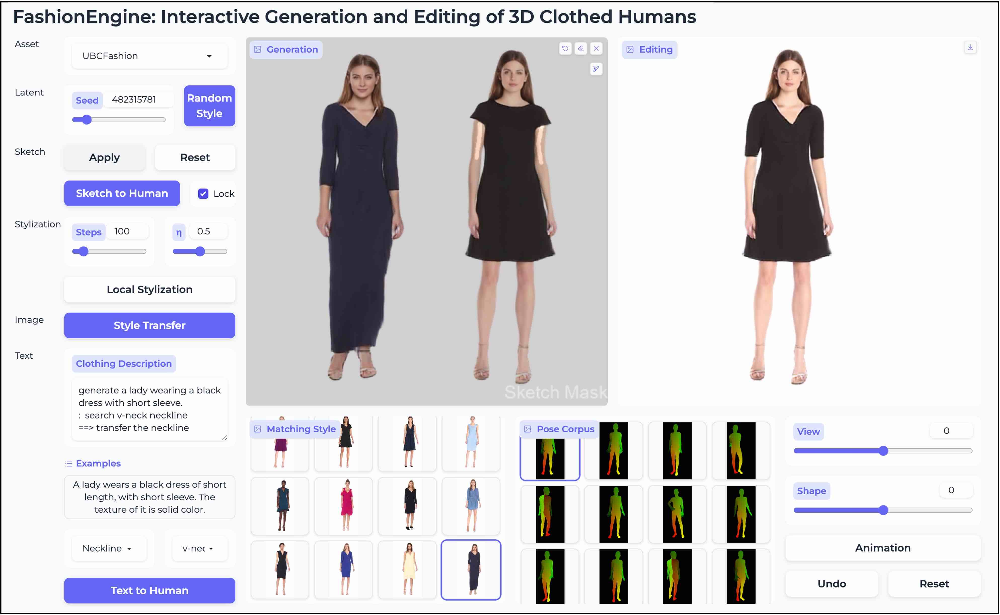
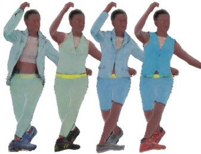

|
Tao Hu (胡涛) |
Biography
I am a Postdoc Research Fellow at NTU, working with Prof. Ziwei Liu, at S-Lab and MMLab@NTU directed by Prof. Chen Change Loy. I completed my Ph.D. in Computer Science at the University of Maryland, College Park advised by Prof. Matthias Zwicker (CS Department Chair). During my PhD, I had the pleasure to visit the Max Planck Institute in Saarbrücken, Germany under the guidance of Prof. Christian Theobalt in 2020, and 3DV Lab at Tsinghua University, China under the guidance of Prof. Yebin Liu in 2021. Before that, I received my B.Eng. and M.S. degree from the School of Software, Beijing Institute of Technology in 2015 and 2018 respectively.
Research Interest
My research focuses on 3D representation learning, 3D reconstruction, neural rendering, generative models, and human appearance/motion/geometry modeling.Research Experience
|
College of Computing and Data Science, Nanyang Technological University, Singapore Research Fellow, Jun. 2023 ~ present Advisor: Prof. Ziwei Liu Affiliated: S-Lab and MMLab@NTU directed by Prof. Chen Change Loy. |
|

|
Department of Computer Science, University of Maryland, College Park, USA Ph.D., Aug. 2018 ~ Jun. 2023 Supervisor: Prof. Matthias Zwicker |

|
3DV Lab, Tsinghua University, Beijing, China Research Intern, Apr. 2021 ~ Nov. 2021 Supervisor: Prof. Yebin Liu |

|
Graphics, Vision & Video Group, Max Planck Institute for Informatics, Saarbrücken, Germany Research Intern, Mar. 2020 ~ Sep. 2020 Supervisor: Prof. Christian Theobalt |

|
Shanghai AI Lab, Shanghai, China Research Intern, Apr. 2023 ~ Jun. 2023 Supervisor: Prof. Ziwei Liu |

|
Intelligent Creation Lab, ByteDance Inc USA, Remote Research Intern, Dec. 2021 ~ Jul. 2022 Supervisor: Dr. Hongyi Xu, Dr. Linjie Luo |
|
Speech Group, Microsoft Research Asia (MSRA), Beijing, China Research Intern, Jun. 2017 - Nov. 2017 Supervisor: Dr. Kai Chen |
Preprint
|  |
FashionEngine: Interactive 3D Human Generation and Editing via Multimodal Controls. |
|  |
HumanLiff: Layer-wise 3D Human Generation with Diffusion Model. |
Selected Publications


Services
Conference Reviewer:Selected Awards & Honors
Graduate National Scholarship (Top 2%), Ministry of Education of China 2016 Undergraduate National Scholarship (Top 2%), Ministry of Education of China 2014